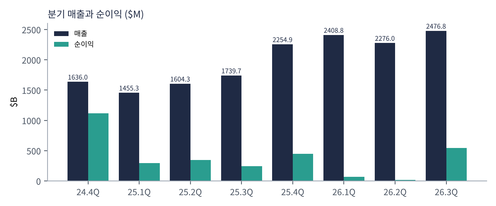
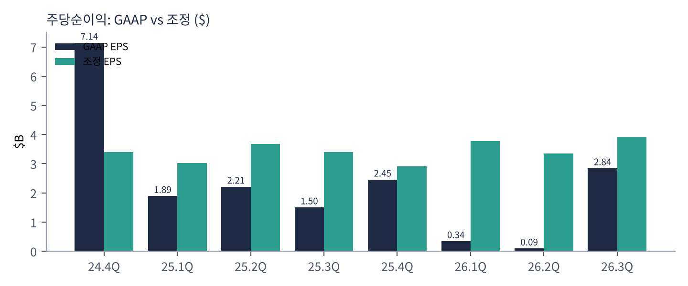
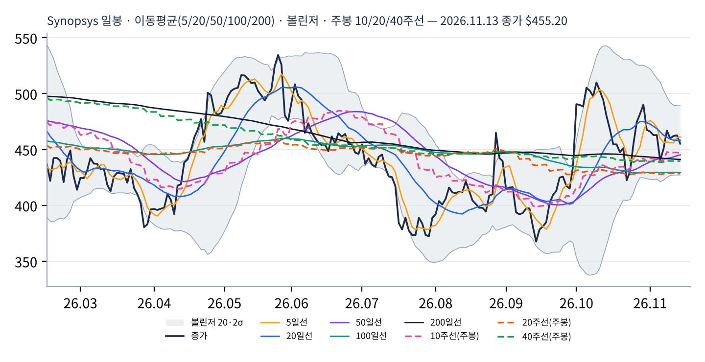
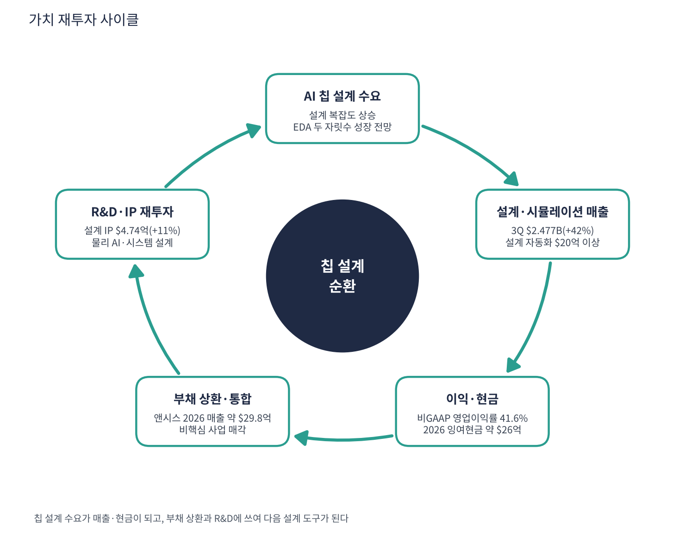

시높시스는 반도체 설계 소프트웨어(EDA)와 설계 IP를 파는 회사다. 앤시스를 인수해 시뮬레이션까지 넓혔다. AI 칩 설계 수요와 앤시스 합병으로 매출이 42% 늘었지만 합병 부채와 상각비가 이익을 깎는 회사다.
| 항목 | 내용 |
|---|---|
| 종목 | Synopsys (SNPS) · NASDAQ · 반도체 설계 소프트웨어 · 회계연도 10월 마감 |
| 밸류에이션 | PER 80.4배 · P/S 9.46배 (11/13 종가 $455.2) |
| 최근 분기(FY26 3Q) | 매출 $24.8억(+42%), GAAP EPS $2.84, 비GAAP EPS $3.91, 비GAAP 영업이익률 41.6% |
| 부문 | 설계 자동화 약 80.9%, 설계 IP $4.74억(+11%) |
| 가이던스 | FY26 매출 약 $97.15억, 비GAAP EPS 약 $15.07, 4Q 매출 $25.3~25.8억 |
| 현금·부채 | 이번에 미수집(스캐너 값 확보 못함). 앤시스 인수 부채가 있다는 점은 회사 발표 기준 |
| 직책 | 인물 | 역할·특징 |
|---|---|---|
| CEO | 사신 가지 | AI 칩 설계 수요와 앤시스 통합을 강조 |
경영 스타일: '설계 도구를 시뮬레이션까지 묶어 판다'. 앤시스 인수로 칩 설계에서 시스템 시뮬레이션까지 하나의 플랫폼으로 만들고, 번 현금으로 부채를 갚으며 R&D에 재투자한다는 방침이다.
칩 설계 자동화(EDA)와 물리 시뮬레이션을 결합한 플랫폼을 판다.
설계 IP와 시뮬레이션으로 칩에서 시스템까지 영역을 넓힌다.
| 분기 | 매출 | 순이익 | EPS | 조정 EPS | 특이 사항 |
|---|---|---|---|---|---|
| FY24 4Q | $16.4억 | $11.1억 | 7.14 | 3.40 | GAAP 순이익 급증(일회성 이익 추정, 확인 필요) |
| FY25 1Q | $14.6억 | $3.0억 | 1.89 | 3.03 | |
| FY25 2Q | $16.0억 | $3.5억 | 2.21 | 3.67 | |
| FY25 3Q | $17.4억 | $2.4억 | 1.50 | 3.39 | |
| FY25 4Q | $22.5억 | $4.5억 | 2.45 | 2.90 | |
| FY26 1Q | $24.1억 | $0.7억 | 0.34 | 3.77 | GAAP 순이익 급감(인수 상각비 영향 추정) |
| FY26 2Q | $22.8억 | $0.2억 | 0.09 | 3.35 | |
| FY26 3Q | $24.8억 | $5.5억 | 2.84 | 3.91 | 3Q 비GAAP 영업이익률 41.6% |


* 4분기 값은 '연간 − 1~3분기 합' 근사치. 회계연도는 11월~10월이다. 조정 EPS는 트레이딩뷰 Reported(비GAAP)다. FY24 4분기 순이익 $11.1억은 일회성 이익이 섞인 것으로 보인다(확인 필요).
흐름 요약: 분기 매출은 $16.4억에서 $24.8억으로 늘었고 비GAAP EPS는 $2.90~3.91 범위다. GAAP EPS는 인수 상각비 탓에 $0.09~2.84로 크게 흔들린다. 분기 설비투자는 구하지 못했다.
| 부문 | FY26 3Q | 비중 | 비고 |
|---|---|---|---|
| 설계 자동화 | – | 약 80.9% | 회사 |
| 설계 IP | $4.74억 | 약 19%(내 계산) | +11% |
설계 자동화가 5분의 4를 차지한다. 앤시스 FY26 매출 기여는 약 $29.8억이다(보도). 지역별 비중은 구하지 못했다.
시높시스는 '칩에서 시스템까지 설계 전체를 자동화하는 플랫폼'을 목표로 한다.
| 축 | 최근 움직임 |
|---|---|
| 통합 | 앤시스 인수 통합과 부채 상환 |
| 제품 | AI 설계 도구, 물리 AI |
| 위험 | IP 부문 성장 정체, 수출 규제 일반 위험 |

| 이동평균 | 값 | 종가 대비 | 해석 |
|---|---|---|---|
| 5일선 | $461.39 | -1.3% | 현재가가 아래 |
| 20일선 | $458.20 | -0.7% | 현재가가 아래 |
| 50일선 | $445.16 | +2.3% | 현재가가 위 |
| 100일선 | $429.50 | +6.0% | 현재가가 위 |
| 200일선 | $441.09 | +3.2% | 현재가가 위 (+3%) |
주봉 흐름: 52주 저점 $362.6(2026.9.15) 이후 반등해 11월 $455 부근이다. 52주 고점은 $539.5(2026.5.26). 현재가는 5·20일선 아래, 50·100·200일선 위다.
| 규칙 | 기준 | 현재 값 | 신호 |
|---|---|---|---|
| 장기 추세 필터 | 종가 vs 200일선 | $455.20 > $441.09 | 매수 |
| 중장기 교차 | 50일선 vs 200일선 | $445.16 > $441.09 | 매수 |
| 단기 교차 | 20일선 vs 50일선 | $458.20 > $445.16 | 매수 |
| 돈키언 채널 | 55일 고가 $512.49 / 저가 $362.55 | 중간값 $437.52 위 | 매수 |
| 1개월 모멘텀 | 21거래일 수익률 | -2.8% (기준 $468.11) | 매도 |
| 3개월 모멘텀 | 63거래일 수익률 | +10.2% (기준 $413.22) | 매수 |
| 6개월 모멘텀 | 126거래일 수익률 | -9.4% (기준 $502.42) | 매도 |
| 12개월 모멘텀 | 252거래일 수익률 | +14.1% (기준 $398.81) | 매수 |
| 종합 (8개 평균) | +0.50 | 매수 우위 |
해석: 8개 신호 중 매수 6개, 매도 2개(점수 +0.50, 매수 우위)다. 14일 ATR $18.31 (4.0%).
| 가격·조건 | 무엇이 바뀌나 | 의미 |
|---|---|---|
| $468.11 돌파 | 1개월 기준가 | 매도 → 매수 |
| $502.42 돌파 | 6개월 기준가 | 매도 → 매수 |
| $441.09 돌파 | 200일선 | 이탈하면 매수 → 매도 |
| 50일선이 200일선 위로 | 50/200 교차 | 이탈하면 매수 → 매도 |
| 20일선이 50일선 위로 | 20/50 교차 | 이탈하면 매수 → 매도 |
| 구분 | 가격대 | 근거 |
|---|---|---|
| 저항 1 | $458.2 ~ 461.4 | 20일선 $458.2, 5일선 $461.4 |
| 저항 2 | $512.5 / $539.5 | 55일 고점 $512.5, 52주 고점 $539.5 |
| 지지 1 | $445.2 / $441.1 | 50일선 $445.2, 200일선 $441.1 |
| 지지 2 | $429.5 / $362.6 | 100일선 $429.5, 52주 저점 $362.6 |
점수 +0.5로 매수 우위다. 5·20일선 아래라 단기는 눌림 구간이다. 50일선($445.2) 부근에서 분할로 접근하고, 100일선($429.5)을 종가로 내주면 정리한다. 4분기 매출 $25.3~25.8억이 확인 지점이다.
| 악재 요인 | 내용 | 강도 |
|---|---|---|
| 합병 상각·부채 | GAAP EPS가 $0.09~2.84로 출렁 | 중간 |
| IP 부문 정체 | 설계 IP +11% | 중간 |
| 규제 | 중국 등 수출 규제 일반 위험 | 중간 |
| 밸류에이션 | GAAP PER 80배, 비GAAP PEG 약 1.9 | 중간 |
| 티커 | 회사 | PER(TTM) | PEG | P/S | EPS 성장(YoY) |
|---|---|---|---|---|---|
| SNPS | 시높시스 | 80.4배 | – | 9.46배 | – |
| CDNS | 케이던스 | 64.2배 | 2.22 | 14.96배 | +30% |
| PTC | PTC | 22.2배 | 0.50 | 7.85배 | +44% |
| KEYS | 키사이트 | 41.0배 | 0.32 | 8.00배 | +131% |
SNPS는 스캐너 PEG·EPS 성장률이 없어 '–'다. 값은 스캐너 기준이다.
시높시스의 현금·부채 값은 이번 조사에서 확보하지 못했다. 앤시스 인수로 부채가 늘었다는 점과 FY26 잉여현금흐름 약 $26억 전망만 확인했다(회사).
| 지표 | 값 | 계산·출처 | 해석 |
|---|---|---|---|
| 현금 | 미수집 | – | 확인 필요 |
| 총차입금 | 미수집 | – | 확인 필요 |
| FY26 잉여현금 전망 | 약 $26억 | 회사 | – |
| 기준 | 값 | 비고 |
|---|---|---|
| P/S (TTM) | 9.46배 | 스캐너 |
| 동종 | CDNS 15.0, PTC 7.9, KEYS 8.0 | 11/13 스캐너 |
해석: 스트레스 가정(내 가정): P/S 7배 $337(-26%) · P/S 8배 $385(-15%) · P/S 10배 $481(+6%) · P/S 12배 $577(+27%).
| 지표 | 값 | 판정 |
|---|---|---|
| PER (GAAP TTM) | 80.4배 | 상각비로 부풀려짐 |
| PER (비GAAP, FY26 전망) | 약 30.2배 | $455.2 ÷ $15.07(내 계산) |
| EBITDA | 미수집 | 확인 필요 |
| 방식 | PER | EPS 성장률 | PEG | 판정 |
|---|---|---|---|---|
| 트레이딩뷰 (GAAP TTM) | 80.4배 | – | – | 스캐너 PEG·성장률 없음 |
| 비GAAP FY26 전망 기준(내 가정) | 약 30.2배 | +16% | 약 1.9 | FY25 비GAAP EPS 합 $12.99 → FY26 전망 $15.07 |
판정: PEG는 사용하지 않는다(스캐너 값 없음). 내 가정 PEG 약 1.9는 1.0을 넘어 투자 적격 구간이 아니다.

시높시스의 사이클은 AI 칩 설계 수요 → 설계·시뮬레이션 매출 → 이익·현금 → 부채 상환·통합 → R&D·IP 재투자 → 다음 설계 도구다. 설계 수요가 매출과 현금이 되고, 현금이 부채 상환과 R&D로 돌아가 다음 매출을 만든다.
| 고리 | 현재 숫자 | 고리 강도 | 약해지는 신호 |
|---|---|---|---|
| ① AI 칩 설계 수요 | EDA 두 자릿수 성장 전망 | 강함 | 고객 설계 투자 축소 |
| ② 설계·시뮬레이션 매출 | 3Q $24.8억(+42%) | 강함 | 합병 효과 소멸 |
| ③ 이익·현금 | 영업이익률 41.6%, FY26 잉여현금 약 $26억 | 강함 | 상각·통합 비용 |
| ④ 부채 상환·통합 | 앤시스 FY26 매출 약 $29.8억 | 보통 | 부채 감소 지연 |
| ⑤ R&D·IP 재투자 | 설계 IP $4.74억(+11%) | 보통 | IP 성장 정체 |
구조: ①②③이 강하다. 앤시스 합병 효과가 사라진 뒤에도 성장이 이어지는지가 확인 지점이다.